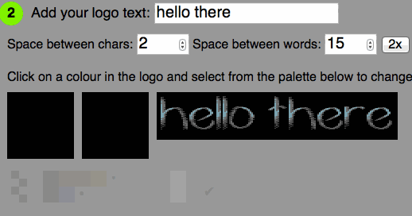
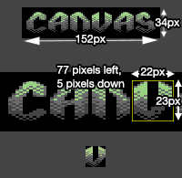
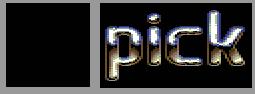

During my time off from work, I went back to one of my old passions: pixeling stuff on a Commodore 64. Many years ago (15, to be exact) I created a logo generator that allows you to put together a logo from a charset pixeled on a C64. I wrote this old version in PHP using GD and moved it to use canvas and work client-side some time ago. Now I thought it would be fun to brush this up and play with it. So I created a much more bells and whistles version. You can see the "Logo-O-Matic" online (and the source is of course available on GitHub).

The features are pretty nice:
- Choose from 58 fonts (and counting)
- Create a logo using variable letter and word spacing
- Inspect the logo (zooming, seeing the colour under the cursor)
- Change the colours of the logo
- Save the logo in original or double size as a PNG.
In this article, I will explain how I did some of that, repeat some canvas basics and show simpler examples of the editor features. The whole article and demos is hosted on GitHub, so feel free to download and play with the examples. Originally, I planned to create a fiddle for each example, but I have no internet right now.
The canvas element is a weird one in HTML. It does exactly nothing without JavaScript interaction. So, it's role in markup is to be a placeholder for functionality that is relying on JS. Of course, it is still good to have it in your document as you can provide fallback content inside it.
Quick aside:
"This product uses canvas and needs JavaScript and your browser doesn't support it, upgrade to something useful, you monkey"
Is not something we should consider good fallback content. When I use canvas for animations I tend to provide a static image as the fallback. This not only makes people happier who can not change their browser. It also means that social media sites like Facebook index it and show the image as the thumbnail.
The canvas API is rudimentary, but also powerful. It allows you to paint on the canvas using rectangles, lines, arcs and gradients. It has many ways to manipulate your brush and the fill you are using. Furthermore, it has a dynamic coordinate system, which is quite a brain-teaser the first time you use it. Once you understand it, this is a very powerful feature, though.
For this purpose here, we won't need the whole API, just a few parts of it. The HTML needed for the examples in this article is basic:
<img src="…" alt="dollar">
<button>Copy image to canvas ➜</button>
<canvas></canvas>
To work with canvas, you need two things: a reference to the canvas element and one to its context. The reference is there to modify the element itself (for example resize it) and the context gives you the API to modify it.
var canvas = document.querySelector('canvas');
var context = canvas.getContext('2d');
The first thing we need to create a logo from an image containing a font set is to modify images. So, let's start there.
Modifying images with canvas
One of the things canvas is good at is modifying images. Anything that is an image can be a data source for a canvas: an img element, a video element or even another canvas. Once you have the data you can manipulate it, either pixel by pixel or using the canvas API.
Caveat: the image must be on the same domain as the code that modifies the canvas because of security reasons. You can work around that limitation by using a proxy to load the image, using CORS or by inlining the image. Another way is to ask users to upload or drag and drop the image. This is what I used in zoom and pick or Remove photo data.
For example, copying a picture to a canvas is as simple as this:
Copy an image
Once you have the image on the canvas you can manipulate it any way you want to using the canvas API. Notice though that there is no state in canvas. Every step is like painting over the original content of the canvas and there is no undo. All you do is manipulate a canvas. You can save and restore the state of the context, for example if you want to rotate the image:
Rotate an image
If the rotation logic is confusing, this image rotation tutorial should make things clearer.
The drawImage() method does not only copy the image, you can also resize it. This is not like resizing an IMG element - which only does this visually. Resizing on a canvas also means you discard or add pixels to the image. It is a real painting process, not a squashing or stretching. To resize an image, all you need to do is to define a different size in the parameters of the drawImage() method:
Resize an image
If all you want to do is to scale the image by a certain factor, you can also scale the coordinate system of the context:
Scale an image
Instead of using the whole image, you can also access parts of it. The drawImage() method allows you to pick a part of the image. All you need to do is to provide a start coordinate and the width and height of the square to copy over. For example to crop the "v" from the canvas logo above, all you need to know where the letter starts and how wide and tall it is. 
The following example shows how to crop the 'v' from the logo using these coordinates:
Crop image out of larger image
That was the main thing needed to create a logo from a charset. All that was necessary was to know the start coordinate of each letter and the width and height and things fell into place. Another thing I needed, though, was a way to manipulate pixels of the logo to allow for re-colouring.
Reading and manipulating pixel data
Canvas has an API for painting and for copying bits of the canvas, but there is also a much more basic way of interacting with it. Using the getImageData() method of the context you can get the current state of the canvas an an object. This object is simple:
- width
- the width of the canvas in pixels
- height
- the height of the canvas in pixels
- data
- the pixel data. This is an array of numbers, each pixel is four array items: the red value of the colour, the green, the blue and the alpha (transparency). For array value consistency reasons, the alpha is not from 0 to 1 like it is in the RGBA of CSS, but from 0 to 255.
This means you can paint on a canvas by reading, modifying and writing the data array of this object.
Colour analysis using Canvas
You can use this to read the pixel data of an image and run some analysis on it. For example, you could display all the colours used and sort them by amount of pixels.
The logic of analysing the colours used and displaying them by most used to least is:
- Create an object for the colours and an array for the sorted colours
- Read the pixel data, loop over it with using a loop with steps of four (to iterate over the pixels)
- Create a key from the array values (for example $R-$G-$B-$A - where $ are the values)
- Store the key in the colours object if it doesn't exist yet - if it already exists, increase its value. This means the colours object will now contain all the colours as keys and have the amount of pixels of that colour as its value.
- Sort the object by value using the new
Object.keys() method. Call a sort with a comparison function and store it in the "sorted colours" array
- Iterate over that array and display it as a list
In JavaScript, this looks the following way:
Count the colours used in an image
Caveat: Notice that this could be slow with large JPG images, but here we deal with a fixed palette of 16 colours and small images. WAlthough the data array is a Uint8ClampedArray it might be safer to use a worker thread to avoid slowing down the browser.
Displaying the colour under the cursor
One of the features people asked for was to have a display of the colour of the current pixel to see which ones the original artist used.

This is pretty easy to do:
- Read the current mouse position. For this use
layerX and layerY of the event object and make sure to position the canvas relatively for this to work.
- Get the image data of that pixel
- Write this to the
background style of the colour display using RGBA
In code, it looks like this (move your mouse over the logo to see the colour of each pixel):
Read colour under mouse cursor
Change pixel values of the canvas
You can not only read but also write this data. Say for example you want to swap the colour of an image around. You can do this by reading the green value and swap it with the red one. The following demo shows how that looks in code:
Shift colours from green to red
We can crop letters from an image, plot them onto a canvas and manipulate their pixels. That's all we need. Next was the task to get from a string to an image.

{kind=link}
{kind=link}